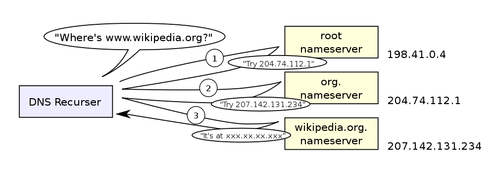
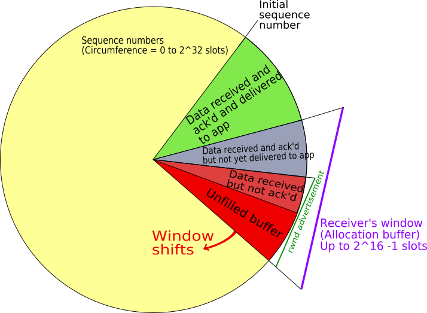

TCP and DNS
Info 253: Web Architecture
Kay Ashaolu
Telephone Numbers
- Specify a device, not necessarily a person
- But to call a person, we eventually need to call a device
- How do we map between a person and their phone?
Hostnames -> IP addresses
- Just like my telephone number, we associate names like facebook.com to a number
- Association is done using Domain Name Service (DNS)
- DNS has a hierarchy for finding who can authoritatively provide an IP address, and typically has caching once the question has been answered
Parts of a Hostname
- Top Level Domain: highest level in domain hierarchy:
.com .org .edu .uk .cn - Subdomain: labels specifying the hierarchy reading from right to left
- Hostname: domain name with an IP address
Hostnames -> IP addresses
- To find a mapping, a client asks a root name server
- The nameservers will recursively direct the client to the domain authority
- Authority will return an IP address, client may optionally cache
Hostnames -> IP addresses
Example
host -v -t A people.ischool.berkeley.edu Trying "people.ischool.berkeley.edu" ;; ->>HEADER<<- opcode: QUERY, status: NOERROR, id: 46402 ;; flags: qr rd ra; QUERY: 1, ANSWER: 2, AUTHORITY: 0, ADDITIONAL: 0 ;; QUESTION SECTION: ;people.ischool.berkeley.edu. IN A ;; ANSWER SECTION: people.ischool.berkeley.edu. 10800 IN CNAME harbinger.ischool.berkeley.edu. harbinger.ischool.berkeley.edu. 9147 IN A 128.32.78.16
Mapping Types
- A: IP Address (main record type)
- CNAME: alias for another domain name
- MX: mail transfer agents
- TXT: meta data
Why Separate Names & Addresses?
- Different semantic meaning
- May want other mappings: names to street addresses
- They don't have to be the same, so keep flexibility
Caching
- Inefficient to always start at the root
- Instead, ask a "local" server
- "local" server does the recursive lookup, caches result
Browsers
- Type in a URL with domain name (eg. yelp.com)
- Browser uses DNS to find IP address (eg. 199.255.189.60)
- Connects to address on a port (eg. 80)
- Sends packets of data containing GET / HTTP/1.1
IP is Unreliable
- Best effort delivery
- No guarantees
- How do we build a reliable Web on it?
Transport Control Protocol (TCP)
- Correctness: prevent data corruption
- Reliability: ensure delivery or error
- Ordering: add sequence numbers
- Congestion: back off
Checksum
- Take the bits in a message
- Add them up
- Append the sum
- Example: "kay" = 107 + 97 + 121 = 325
Ack
- When a machine receives a packet, it acknowledges it
- If a machine does not receive an ack, it resends
- To keep track of messages, uses a sliding window

Sequence Numbers
- Packets can be sent out of order because of congestion, retry, etc.
- How do we know the right order?
- Agree on a starting number, send numbered packets
- Client will keep track of packets received, deliver data in order to app

Three-way Handshake
- SYN: Synchronize using a random starting number
- SYN-ACK: Acknowledge syn packet with an ack number and its own random starting number
- ACK: Acknowledge the SYN-ACK packet
Congestion
- Why are packets delayed?
- Often it is because the system is overwhelmed
- So back off! If it is still overwhelmed, back off more!
Telnet
- TCP/IP and DNS client
- Connects to a host at TCP/IP level
- Up to you to communicate with HTTP or any other protocol
- Does TCP/IP know about domains or hostnames?
Flexibility
- TCP/IP most commonly used, but not the only ones!
- UDP (User Datagram) used for DNS
- Real-time protocols (voice, video) may value timeliness over correctness

Composability
- Internet is a network of networks
- IP used to send packets between two addresses
- DNS maps names to addresses
- TCP ensures reliable communication
- Web built on Internet technology
Overview